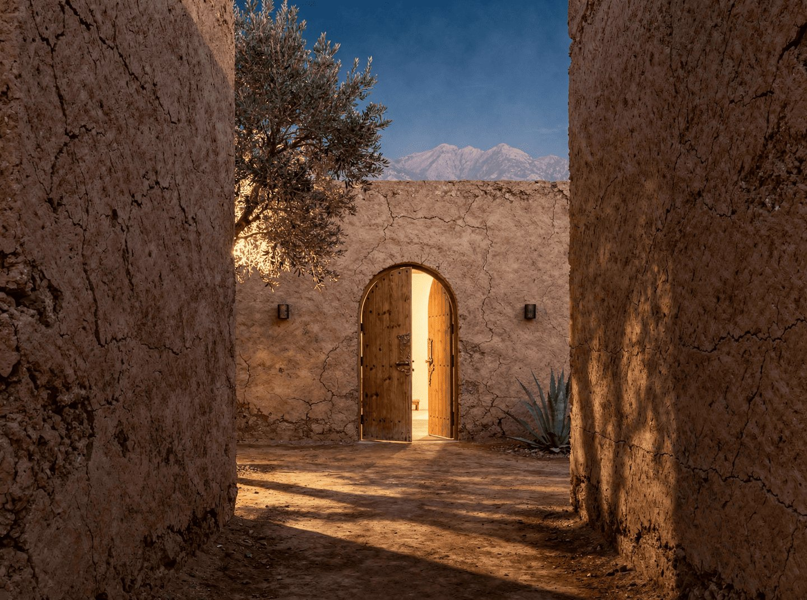
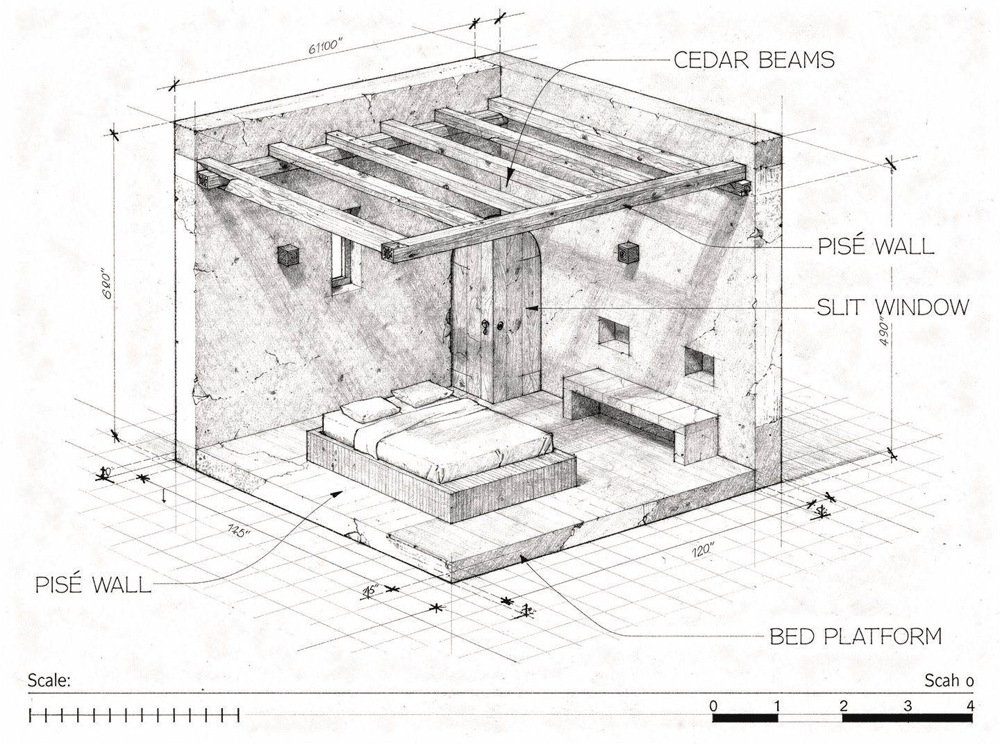
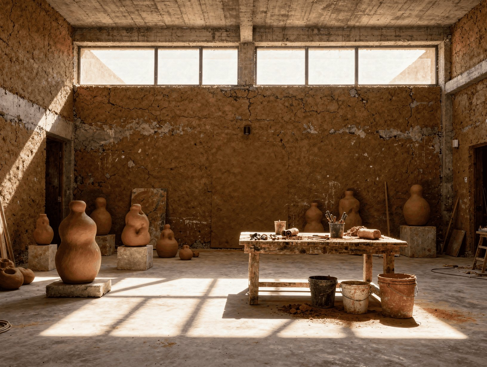

Le principe d'implantation abandonne le modèle de pavillons dispersés, qui produit un campus de resort, exactement ce que ce projet n'est pas. Il adopte la logique du ksar : des unités groupées autour d'un passage intérieur commun, murs extérieurs aveugles, intimité garantie par l'épaisseur du mur et non par la distance.
Chaque cluster regroupe 4 mini-riads partageant un passage intérieur. Les murs extérieurs du cluster sont aveugles, une porte arquée en cèdre par unité, deux ouvertures étroites maximum. Depuis l'extérieur, le cluster se lit comme un volume de pisé unique, sévère et silencieux. Les murs partagés entre unités adjacentes génèrent des économies constructives significatives et réduisent les réseaux enterrés.
Chaque cluster porte un programme unique, un élément attaché qui lui donne une identité propre et une raison de s'y rendre. L'espace entre les clusters est le programme : le jardin, l'oliveraie, les chemins cairnés. Un hôte qui reste 5 nuits a 5 raisons de marcher.
Phase 1 (Clusters 1, 2, 3) : 4×1BR par cluster = 12×1BR. Phase 2 (Cluster 4) et Phase 3 (Cluster 5) : 3×1BR + 1×2BR par cluster. Total à pleine capacité : 15×1BR + 5×2BR = 20 unités. Jamais plus, contrainte artistique absolue.
Les ouvertures entre unités sont interdites. Contrainte absolue n°5, Brief Part 3.
Le riad marocain est une architecture de l'inversion : aveugle sur l'extérieur, tout entier tourné vers un jardin intérieur. C'est l'une des typologies résidentielles les plus sophistiquées au monde, une réponse directe à la chaleur, à la poussière, à l'indiscrétion. Nous réinterprétons ce principe dans un langage contemporain et désertique.
L'extérieur du mini-riad est presque aveugle. Un visiteur de passage voit un volume de terre crue, sévère et silencieux. Une seule porte en cèdre arquée, deux ouvertures étroites au maximum, hautes et fines. Rien ne trahit ce qui se passe à l'intérieur.
On pousse la porte : on entre dans un monde différent. Un jardin intérieur de 30m², au centre duquel une piscine en zellige foncé reflète le ciel. Les espaces de vie s'ouvrent entièrement sur ce patio. Le ciel est le seul horizon. La lumière change toutes les heures.
La piscine n'est pas un équipement de loisir, elle est structurellement intégrée au patio, au même niveau que le sol. Le bassin en zellige foncé réfléchit la lumière et crée le microclimat de la cour. Un olivier ou un grenadier pousse dans un angle. La nuit, des lanternes en laiton. Le silence.
Le confort est total et invisible. Le lit est un Tréca. Le linge est du lin épais, légèrement froissé. La climatisation est réversible, encastrée, non visible. La salle de bain est en tadelakt intégral avec baignoire îlot et douche italienne. La sobriété est architecturale, pas ascétique.
| Chambre + dressing cèdre | 45 m² |
| Salle de bain tadelakt | 20 m² |
| Salon / espace vie | 25 m² |
| Surface bâtie totale | 110 m² |
| Patio intérieur | 30 m² |
| Emprise totale au sol | 140 m², env. 15×13m ext. |
| Piscine bassin zellige | 4×5m, 1,4m profondeur |
| Coût construction | ~199 000€ / unité (cluster) |

Chaque mini-riad 1BR est identique dans son programme, distinct dans son orientation et son rapport au jardin. Surface : 55-65m². Aucune exception de programme sans accord écrit.

La ferme existante de 1 200m² devient le cœur public du territoire. Elle accueille la vie collective : le restaurant gastronomique, la galerie Toile Blanche Contemporary Marrakech, la réception, le bar, la terrasse rooftop face à l'Atlas. Elle n'est pas rénovée pour ressembler à un hôtel, elle est rénovée pour ressembler à ce qu'elle a toujours été, avec une précision contemporaine assumée.
Le bâtiment existant en pisé est conservé dans ses grandes lignes. Les interventions contemporaines sont lisibles, assumées, jamais imitatives. On ne fabrique pas du vieux. On ne cache pas le neuf. La règle : le pisé original reste pisé, les additions en béton brut sont clairement béton brut, les menuiseries en cèdre sont nettement cèdre.
| Espace | Surface | Note |
|---|---|---|
| F&B et accueil | ||
| Restaurant, Le Restaurant (dîner) + La Guinguette (déjeuner) | Salle + terrasse | 40 couverts. Cuisine ouverte ou semi-ouverte. Une cuisine, deux formules. |
| Cuisine professionnelle | ~70 m² | Froid, cuisson gaz/biogaz, extraction, plonge 80 cvts. HACCP. |
| Bar / réception | ~40 m² | Comptoir pierre locale. Vue sur cour centrale. |
| Terrasse rooftop | ~80 m² | Vue Atlas. Yoga matin. Dîner été. Non visible depuis la Route de Fès. |
| Galerie | ||
| Toile Blanche Contemporary Marrakech | ~150 m² | Cimaises blanches. Éclairage LED muséal (Erco). Sol béton ciré. Hauteur min. 4m dans la cour. |
| Réserve et stockage œuvres | ~30 m² | Conditions climatiques stables. Sécurisé. |
| Back-of-house | ||
| Bureaux direction | ~25 m² | Gilles Leroy + Tahnee. Vue jardin si possible. |
| Logements staff | 2 × 30 m² | Autonomes. Accès séparé. Phase 1 différée si budget contraint. |
| Sanitaires publics | ~20 m² | H + F + PMR. Tadelakt. Aucune céramique industrielle. |
| Locaux service | ~40 m² | Linge, ménage, stockage général. |
La cour intérieure à double hauteur du bâtiment existant est l'espace le plus précieux. Elle devient le cœur de la galerie, un espace d'exposition extérieur sous ciel ouvert. Les œuvres y sont présentées comme dans un jardin minéral. Aucune toiture permanente. Si une couverture partielle est nécessaire, elle doit être rétractable et invisible quand rangée.
Le Restaurant (dîner, 40 couverts) utilise la salle principale. La Guinguette (déjeuner informel) utilise la terrasse jardin et le comptoir. La cuisine est partagée. La cuisine doit être intégralement équipée, froid professionnel, cuisson gaz/biogaz (1 piano minimum), extraction puissante, plonge dimensionnée pour 80 couverts en pic saison. Le chef est recruté 6 mois avant l'ouverture.
La terrasse rooftop est l'espace le plus stratégique en termes de paysage. Le matin : yoga (sol bois ipé ou deck pierre, aucun carrelage), face à l'Atlas. L'été : dîner sous les étoiles (8 tables maximum). La nuit : observation du ciel.
Contrainte absolue : depuis la Route de Fès, le rooftop ne doit pas être visible. Les garde-corps sont en verre trempé ou mur pisé de 60cm. Aucune structure apparente en métal.
L'entrée principale (réception / galerie) est clairement séparée de l'accès service (cuisine / livraisons). Les mini-riads sont accessibles par des chemins intérieurs privés, jamais visibles depuis le bâtiment principal. La réception voit l'entrée, pas les unités. Chaque cluster est invisible depuis tous les autres.
Le Studio Leroy Brothers n'est pas un espace d'exposition. C'est un lieu de travail effectif, un atelier où des œuvres sont en cours de production. Les hôtes qui s'y rendent sur invitation ouverte ne visitent pas une galerie. Ils entrent dans un espace de fabrication. Les œuvres en cours y sont visibles. Les matériaux sont présents. L'odeur de la terre et de la térébenthine est dans l'air.
Adjacent au Cluster 3 (productif), le Studio est dans la zone de la propriété dédiée à la matière et au faire : le potager, le biodigesteur, la presse hydraulique Les Compressions. C'est la partie du territoire où quelque chose se produit physiquement, pas seulement où quelque chose s'expose.
Le Studio est ouvert aux hôtes selon présence et disponibilité des Leroy Brothers, sans programme ni réservation. Un membre du staff mentionne son existence une fois, discrètement, au moment opportun. Ceux qui s'y rendent, y vont. Ceux qui n'y vont pas, n'y vont pas.
La possibilité que les Leroy Brothers y travaillent effectivement, qu'un hôte entre et trouve une œuvre en cours, est plus précieuse que n'importe quelle visite guidée. C'est cette possibilité que l'architecture doit rendre crédible.
Le Studio ne doit pas être beau. Il doit être juste, fonctionnel, robuste, honnête. Murs en pisé ou béton brut. Sol béton. Pas de finitions intérieures au sens habituel. Les outils sont visibles. Les œuvres en cours sont exposées à la vue sans mise en scène.
Une distinction essentielle : le Studio est sévère, pas le reste de la propriété. Les mini-riads offrent un confort total. Le Studio est le contrepoint, l'endroit où la propriété montre son vrai travail.
Le Studio est différé à l'année 1 opérationnelle, financé par le Fonds de Croissance (35% du résultat net). Son emplacement et ses fondations sont réservés et raccordés lors de la construction Phase 1. Budget : ~275 000€.
